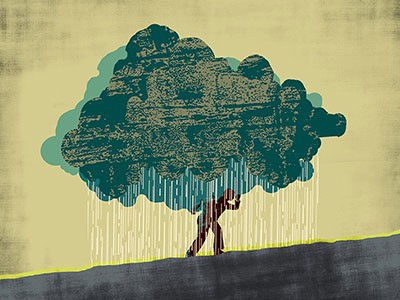

BLOGS AND ARTICLE
7 october 2021 /// Health and well-being of children fleeing violence in Syria
Young people’s mental health is finally getting the attention it needs
The COVID-19 pandemic, a UNICEF report and a review of the latest research all highlight the urgent need for better prevention and treatment of youth anxiety and depression.
Read More

04 may 2020 /// A better future for graduate-student mental health
COVID-19 mental-health responses neglect social realities
WORLD VIEW 04 May 2020 COVID-19 mental-health responses neglect social realities A diagnosis is rarely a solution to problems caused by poverty and inequality. Rochelle Burgess Twitter Facebook Email Early in the COVID-19 outbreak, I was surprised and relieved that mental health was getting due attention. The World Health Organization released guidelines on how
Read More
30 August 2019 /// A consortium of US universities aims to examine how best to help a vulnerable population that is affected by anxiety and depression.
A better future for graduate-student mental health
The COVID-19 pandemic, a UNICEF report and a review of the latest research all highlight the urgent need for better prevention and treatment of youth anxiety and depression.
Read More